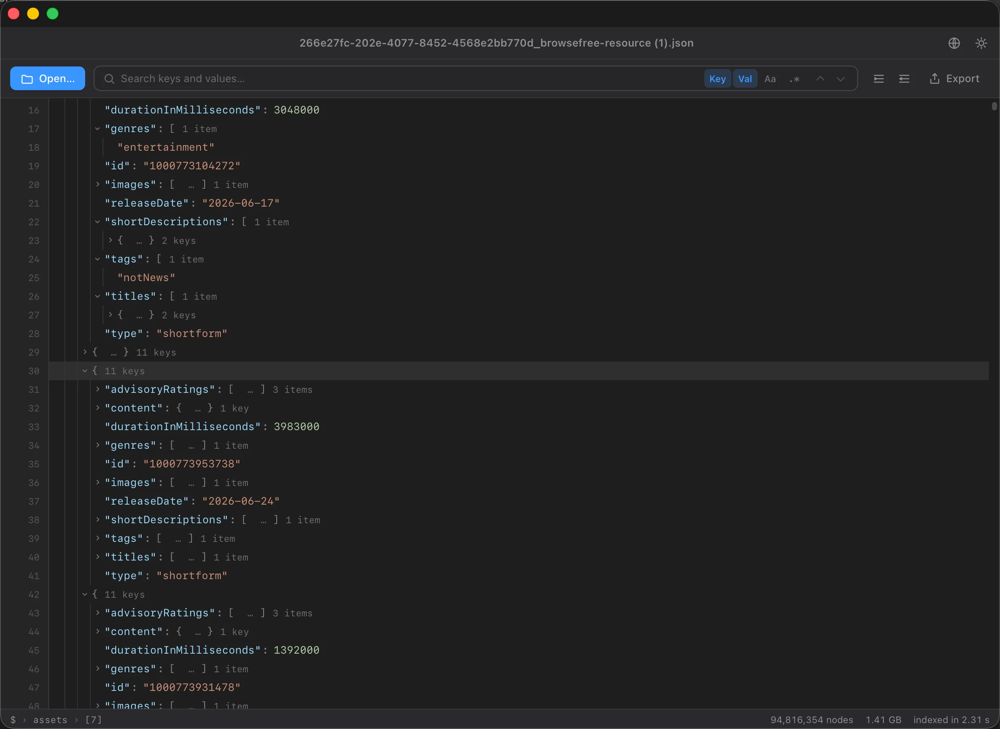

分割せずにギガバイト級を
ファイルをメモリマップしてストリーミングインデックスを構築 — エディタをクラッシュさせることなく、2–3 GBのJSONを数秒で開きます。
超大容量JSONビューアGUI · 旧称 Huge JSON Viewer
数ギガバイトのJSONに対応した、高速でネイティブなmacOSとWindowsのビューア。2–3 GBのファイルを数秒で閲覧・検索・変換 — Dadroitの無料・オープンソース代替。
macOS 11+（Apple Silicon + Intel）· Windows 10+ · 無料 · MITライセンス

必要なものすべて
プロ仕様のJSONツールに欠かせない機能をすべて備え、ギガバイト規模のファイル向けに作られ、完全無料。
ファイルをメモリマップしてストリーミングインデックスを構築 — エディタをクラッシュさせることなく、2–3 GBのJSONを数秒で開きます。
キーと値を、通常のテキストでも正規表現でも検索。リアルタイムのマッチ数表示と、パスを自動展開してマッチへジャンプする機能付き。
折りたたみ可能でシンタックスハイライト付きのツリー。行番号、インデントガイド、型ごとの色分け、子要素数を表示 — ルートからリーフまで閲覧できます。
任意のノードをスプレッドシート対応のCSVまたはXMLへストリーム出力し、サブツリーをJSONとして抽出、キー・値・パスをコピー — 数ギガバイトのファイルでもメモリ使用量を抑えて動作します。
複数のJSONファイルを一度に開き、1つの結合されたツリーとして表示 — それぞれにファイル名のラベルを付け、すべてを横断して検索できます。
インデックスが使うRAMはファイルサイズの約1.5–2×のみ。ファイル本体は、OSが必要に応じて解放できるページキャッシュとして保持されます。
行区切りや連結されたJSONログを自動検出し、閲覧可能な配列としてラップします。
インターフェースは20のロケールで提供され、アラビア語・ウルドゥー語・パンジャブ語の完全な右から左（RTL）表示にも対応しています。
あなたのJSONがコンピュータの外に出ることは決してありません — ファイルのアップロードなし、クラウドなし。送信されるのは匿名かつオプトアウト可能な利用統計のみです。
無料 vs 有料
機能ごとに直接比較。Dadroitの無料プランはファイルを50 MBに制限し、より大きな上限・統合・商用利用は有料 — BigJSONはそのすべてを無料で提供します。
| 機能 | BigJSON | Dadroit Free | Dadroit Standard | Dadroit Advanced |
|---|---|---|---|---|
| 価格 | 無料 | 無料 | $98/yr | $198/yr |
| オープンソース（MIT） | ✓ | ✗ | ✗ | ✗ |
| 最大ファイルサイズ | 4 GB | 50 MB | 2 GB | 1 TB |
| 2–3 GBのJSONを開く | ✓ | ✗ | ✓ | ✓ |
| ツリービューア | ✓ | ✓ | ✓ | ✓ |
| キーと値の検索（RegEx） | ✓ | ✓ | ✓ | ✓ |
| JSON → CSV / XMLへ変換 | ✓ | ✓ | ✓ | ✓ |
| 複数ファイルの統合 | ✓ | ✗ | ✗ | ✓ |
| 商用利用 | ✓ | ✗ | ✓ | ✓ |
| 20言語UI（RTL） | ✓ | ✗ | ✗ | ✗ |
| macOS + Windows | ✓ | ✓ | ✓ | ✓ |
| あなたのファイルがデバイスの外に出ることはありません | ✓ | ✓ | ✓ | ✓ |
Dadroitの価格とプランはdadroit.comに基づきます。唯一及ばないのは文字どおり1 TBのファイル（それにはオンディスクのインデックスが必要です） — それ以外はすべて無料です。
仕組み
ファイルはメモリマップされ、OSが必要に応じてページインします — RAMを大量に消費するオブジェクトへパースすることはありません。
1回のパスでバイトオフセットのフラットな構造インデックスを構築するため、データを保持せずに構造を把握できます。
ツリーは完全に仮想化されており — 画面上の行だけが実体化されるため、数百万行をスクロールしてもスムーズなままです。
無料、オープンソース、そしてネイティブ — macOS（Apple Silicon + Intel）とWindows 10/11に対応。
macOS 11+ または Windows 10+ · 未署名ビルド。macOS：初回起動時 → アプリを右クリック → 開く。Windows：SmartScreenが表示された場合 → 詳細情報 → 実行。変更履歴をご覧ください。よくある質問
BigJSON（無料）をダウンロードし、.jsonファイルをウィンドウにドラッグするか⌘Oを押します。ファイルをメモリマップしてストリーミングインデックスを構築するので、2–3 GBのJSONも数秒で開きます — クラッシュも分割も不要です。
はい — MITライセンスのもとで100%無料・オープンソースであり、商用利用も含みます。有料プランも、サインアップも、試用期間もありません。
1ファイルあたり最大4 GB（複数ファイル統合時も合計4 GB）。インデックスはファイルサイズの約1.5–2×のRAMを使用します。16 GBのマシンなら2–3 GBのファイルも余裕で扱えます。
はい。折りたたみ可能なツリービューア、キーと値のRegEx検索、JSON → CSV / XMLエクスポート、複数ファイルの統合といった同じ要点を — 無料・オープンソースで、macOSとWindowsでカバーします。
はい。JSONをCSV（オブジェクトの配列がスプレッドシートになります）またはXMLへストリーム出力し、数ギガバイトのファイルでもメモリ使用量を抑えて動作します。
あなたのJSONは決してアップロードされません。ファイルは — 名前も内容も — 100%あなたのコンピュータ内にとどまります：アップロードなし、サーバーなし。BigJSONが送信するのは匿名かつオプトアウト可能な利用統計（どの機能が使われたか — ファイルのデータは一切含みません）のみで、ワンクリックでオフにできます。
はい。BigJSONはWindows 10と11（64ビット）でネイティブに動作し、Mac版と同じツリービューア、キーと値の検索、JSON → CSV / XMLエクスポートを備えています。リリースページからWindowsインストーラーをダウンロードし、SmartScreenが表示された場合は「詳細情報」→「実行」を選択してください。